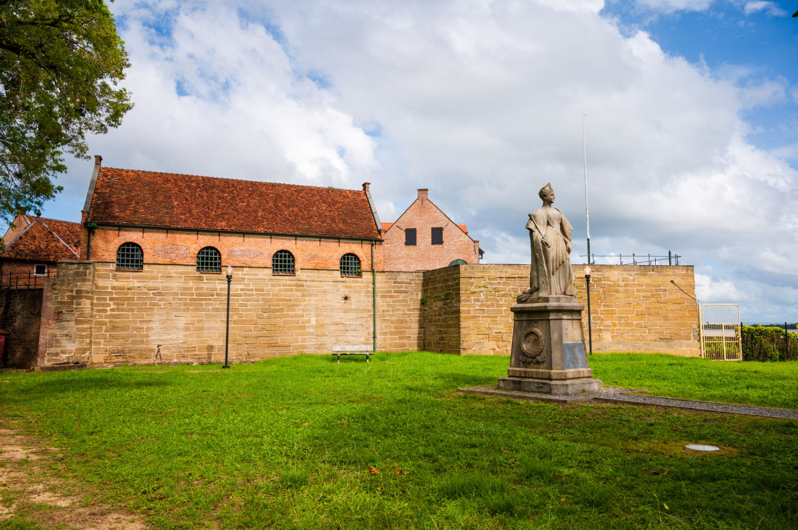
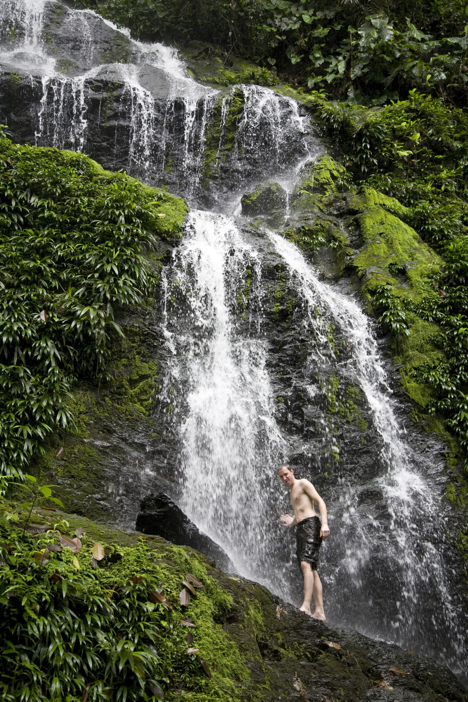
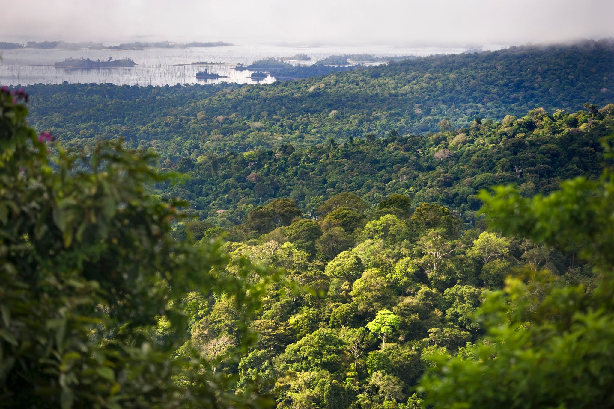
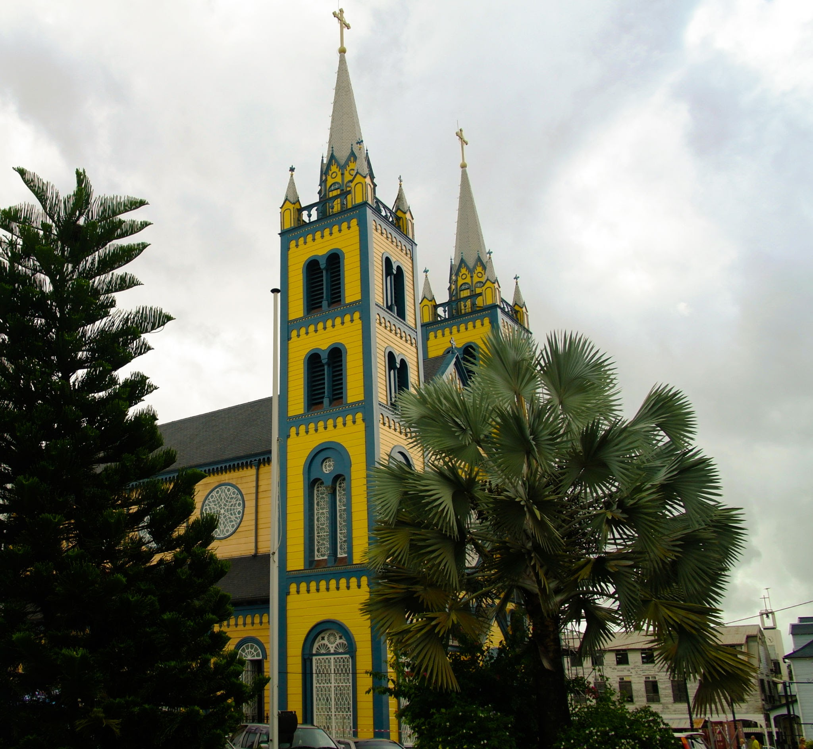
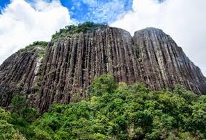

Пам’ятки та визначні місця Суринаму
Форт Зеландія
Дерев'яний форт був побудований англійцями в 1640 році і носив назву форт Уіллорбі в честь губернатора Барбадосу лорда Френсіса Віллоубі , який направив англійських поселенців в Сурінам. В ході Другої англо-голландської війни голландська ескадра під проводом Абрахама Крійнссена атакувала Англійські колонії в Сурінамі. 25 лютого 1667 року Крійнссен досяг річки Суринам , де був розташований форт Уіллорбі. Після короткого обстрілу англійці здали форт, а 6 березня і всю колонію. Крійнссен був уродженцем Зеландії , тому перейменував форт Уіллорбі в форт Зеландія.
Природний парк Браунсберг
СПриродний парк Браунсберг - природний заповідник , розташований в Сурінамі . Площа природного парку - 12 000 га, розташований він в окрузі Брокопондо , приблизно в 130 км на південь від столиці країни - міста Парамарібо . Браунсбрг розташований неподалік від водосховища Брокопондо .
В кінці XIX століття шукачі золота добралися до території нинішнього парку Браунберг. Одним з перших був Джон Браун, в честь якого парк і був названий. Спроба почати видобуток бокситів на цій території не увінчалася успіхом. З 1969 року місце отримало статус природного парку і управлявся STINASU.Активна золотодобування відновилася з 1999 року. Періодично проводилися акції протесту проти нелегальних розробок родовищ і видобутку, проте через високі ціни на золото золотодобування в цьому районі продовжилася.
Собор Святих Петра і Павла
Базиліка Святих Петра і Павла ( нід. Sint-Petrus-en-Pauluskathedraal ) - дерев'яний кафедральний собор Римо-Католицької церкви , розташований в центральній частині столиці Сурінаму Парамарібо . Являє собою найбільше і найвища дерев'яна споруда в Західній півкулі , богослужіння в якому здійснює сам єпископ Парамарібо .
У 1809 році в столиці було зведено театр нідерландських євреїв «Де Верренце Фенікс ». У 1826 році місцеві католики пристосували його під церковні потреби. Через десятиліття кількість католиків в місті значно зросла і вмістити їх до церкви стало практично неможливим. У 1858 році в Парамарібо утворилася єпархія і на замовлення єпископа архітектор Франс Хармес спроектував будівлю майбутнього собору. У 1882 році єпархія прийняла рішення про його зведенні. Він був закладений 30 січня 1883 року . Освячення собору відбулося в 1885 році . Будівництво церковних веж було закінчено лише в 1901 році, воріт - в 1909 році. Спочатку культову споруду відвідували лише вільні люди і законтрактовані робочі.
Касікасіма
Kasikasima , також пишеться Kassikassima , гора в Сіпалівіні з Суринаму . [1] Висота становить 718 метрів.
Село Paloemeu та його аеропорт Вінсента Файкса знаходяться на відстані 40 кілометрів (25 миль) на північ і є вхідним пунктом для поїздок на каное на гору, які надають кілька туристичних компаній. У 1990-х рр. Поблизу гори Касікасіма за підбурюванням євангеліста було створено село, яке мало намір зробити місце табором Біблії та місцем зустрічі Тіріо Суринам та Бразилії